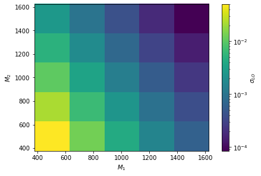
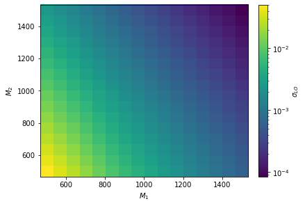
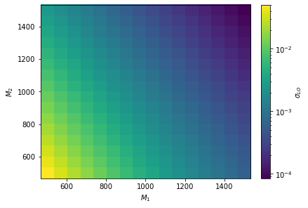
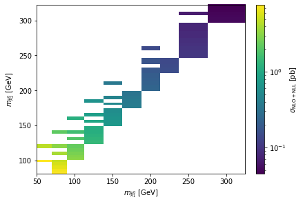
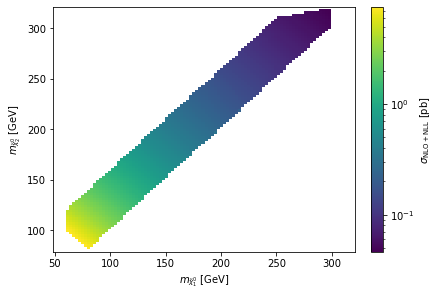

Interpolation
[1]:
import urllib.request
import hepi
import numpy as np
import hepi.resummino as rs
import hepi.spheno as sp
sp.set_path("SPheno")
rs.set_path("resummino")
[2]:
for a,b in [(2000002,1000022)]:
for pdf,nlopdf in [("CT14lo","CT14lo")]:
li = [hepi.Input(hepi.Order.LO,13000,a,b,"slha.in",pdf,nlopdf,1., 1.)]
#li=hepi.slha_scan_rel(li,lambda r : [["EXTPAR",1,r],["EXTPAR",2,r]],np.linspace(500.,1500.,16*2))
li=hepi.mass_scan(li,a,np.linspace(500.,1500.,5))
li=hepi.mass_scan(li,b,np.linspace(500.,1500.,5))
dl = rs.run(li,True,True)
skipskipskipskipskipskipskipskipskipskipskipskipskipskipskipskipskipskipskipskipskipskipskipskipskipRunning: 25 jobs
[3]:
hepi.mapplot(dl,"mass_2000002","mass_1000022","LO",xaxis="$M_1$",yaxis="$M_2$",zaxis="$\sigma_{LO}$",show=True)

[4]:
from smpl import data
xx,yy = data.flatmesh(np.linspace(500,1500,5),np.linspace(500,1500,5))
dll = hepi.interpolate_2d(dl,"mass_1000022","mass_2000002","LO",xx,yy,interpolator="linear")
hepi.mapplot(dll,"mass_2000002","mass_1000022","LO",xaxis="$M_1$",yaxis="$M_2$",zaxis="$\sigma_{LO}$",show=True,fill_missing=False)
#print(dll["LO"])
/usr/lib/python3.8/site-packages/scipy/interpolate/_fitpack_impl.py:977: RuntimeWarning: No more knots can be added because the number of B-spline
coefficients already exceeds the number of data points m.
Probable causes: either s or m too small. (fp>s)
kx,ky=1,1 nx,ny=7,8 m=25 fp=0.000000 s=0.000000
warnings.warn(RuntimeWarning(_iermess2[ierm][0] + _mess))

[5]:
(dl["LO"].to_numpy()-dll["LO"].to_numpy())/dl["LO"].to_numpy()
[5]:
array([0.0+/-0.0016154263871670225,
1.5539029389273503e-16+/-0.0015909845253920855,
0.0+/-0.0015822520490067892, 0.0+/-0.0015819508546576252,
0.0+/-0.001587055618200895,
2.6772946370592586e-16+/-0.0014827480507491023,
0.0+/-0.0014453499859720636,
-2.515267754258356e-16+/-0.0014266141005399458,
1.192233620234001e-16+/-0.0014207667154714826,
3.3356726725471718e-16+/-0.0014217864616281873,
-2.0907546578191998e-15+/-0.0014085512991080533,
-2.0359474544460697e-15+/-0.0013673252967128261,
-1.8262344226844117e-15+/-0.0013448653411289781,
-1.6382129552163417e-15+/-0.0013341627341679062,
-1.7302908222722817e-15+/-0.0013314060188193053,
0.0+/-0.001361907903727031,
1.1779974384479693e-16+/-0.0013226213444908178,
0.0+/-0.0012988387152938253,
1.7286326595444938e-16+/-0.0012854820635717283,
0.0+/-0.001279159351555103, 0.0+/-0.0013320552441462043,
-1.390146825835857e-16+/-0.001296338469651002,
0.0+/-0.0012723021368171658,
1.9054767539780033e-16+/-0.0012573895051737369,
0.0+/-0.0012490700235172464], dtype=object)
[6]:
from smpl import data
xx,yy = data.flatmesh(np.linspace(500,1500,16),np.linspace(500,1500,16))
dll = hepi.interpolate_2d(dl,"mass_1000022","mass_2000002","LO",xx,yy,interpolator="cubic")
hepi.mapplot(dll,"mass_2000002","mass_1000022","LO",xaxis="$M_1$",yaxis="$M_2$",zaxis="$\sigma_{LO}$",show=True,fill_missing=False)
#print(dll["LO"])

[7]:
for a,b in [(2000002,1000022)]:
for pdf,nlopdf in [("CT14lo","CT14lo")]:
li = [hepi.Input(hepi.Order.LO,13000,a,b,"slha.in",pdf,nlopdf,1., 1.)]
#li=hepi.slha_scan_rel(li,lambda r : [["EXTPAR",1,r],["EXTPAR",2,r]],np.linspace(500.,1500.,16*2))
li=hepi.mass_scan(li,a,np.linspace(500.,1500.,16))
li=hepi.mass_scan(li,b,np.linspace(500.,1500.,16))
dl2 = rs.run(li,True,True)
hepi.mapplot(dl2,"mass_2000002","mass_1000022","LO",xaxis="$M_1$",yaxis="$M_2$",zaxis="$\sigma_{LO}$",show=True)
skipskipskipskipskipskipskipskipskipskipskipskipskipskipskipskipskipskipskipskipskipskipskipskipskipskipskipskipskipskipskipskipskipskipskipskipskipskipskipskipskipskipskipskipskipskipskipskipskipskipskipskipskipskipskipskipskipskipskipskipskipskipskipskipskipskipskipskipskipskipskipskipskipskipskipskipskipskipskipskipskipskipskipskipskipskipskipskipskipskipskipskipskipskipskipskipskipskipskipskipskipskipskipskipskipskipskipskipskipskipskipskipskipskipskipskipskipskipskipskipskipskipskipskipskipskipskipskipskipskipskipskipskipskipskipskipskipskipskipskipskipskipskipskipskipskipskipskipskipskipskipskipskipskipskipskipskipskipskipskipskipskipskipskipskipskipskipskipskipskipskipskipskipskipskipskipskipskipskipskipskipskipskipskipskipskipskipskipskipskipskipskipskipskipskipskipskipskipskipskipskipskipskipskipskipskipskipskipskipskipskipskipskipskipskipskipskipskipskipskipskipskipskipskipskipskipskipskipskipskipskipskipskipskipskipskipskipskipskipskipskipskipskipskipskipskipskipskipskipskipskipskipskipskipskipskipRunning: 256 jobs

[10]:
from smpl import stat
dll = hepi.interpolate_2d(dl,"mass_1000022","mass_2000002","LO",xx,yy,interpolator="cubic")
print(stat.mean(np.abs((dl2["LO"].to_numpy()-dll["LO"].to_numpy())/dl2["LO"].to_numpy())))
dll = hepi.interpolate_2d(dl,"mass_1000022","mass_2000002","LO",xx,yy,interpolator="linear")
print(stat.mean(np.abs((dl2["LO"].to_numpy()-dll["LO"].to_numpy())/dl2["LO"].to_numpy())))
# exponential dependency
dll = hepi.interpolate_2d(dl,"mass_1000022","mass_2000002","LO",xx,yy,interpolator="linear",pre=np.log,post=np.exp)
print(stat.mean(np.abs((dl2["LO"].to_numpy()-dll["LO"].to_numpy())/dl2["LO"].to_numpy())))
dll = hepi.interpolate_2d(dl,"mass_1000022","mass_2000002","LO",xx,yy,interpolator="cubic",pre=np.log,post=np.exp)
print(stat.mean(np.abs((dl2["LO"].to_numpy()-dll["LO"].to_numpy())/dl2["LO"].to_numpy())))
0.013+/-0.013
0.22+/-0.25
0.009+/-0.009
0.0003+/-0.0004
[11]:
(dl2["LO"].to_numpy()-dll["LO"].to_numpy())/dl2["LO"].to_numpy()
[11]:
array([0.0+/-0.0016154263871666335,
0.00016204064752406365+/-0.0016061995454333942,
7.899466661134942e-05+/-0.0015996085411351794,
1.0198409639310502e-05+/-0.0015943027134063172,
3.381517513823047e-06+/-0.0015900286956441652,
1.642938008983535e-05+/-0.0015867754012363767,
9.090304291003398e-06+/-0.0015844121424203233,
2.325725097395467e-06+/-0.001582831095203188,
1.230680467278887e-06+/-0.0015817809057449815,
1.2989387602500169e-05+/-0.0015811959210453599,
1.510505679283359e-05+/-0.0015812344985737306,
4.822013007345737e-06+/-0.0015817493174884241,
-1.8196719974296697e-05+/-0.0015827168599131458,
-4.178303056729355e-05+/-0.001584004518574271,
-4.627067310043878e-05+/-0.0015854661853242898,
-1.0119227247554588e-15+/-0.0015870556182008956,
-0.0020947948557539843+/-0.0015749271503869558,
-0.0018272345257328462+/-0.0015641792417776048,
-0.0017373579851937477+/-0.001555938745761014,
-0.0016025259548491698+/-0.0015492206281869677,
-0.001412026260450593+/-0.0015435370792979632,
-0.001267415242125055+/-0.0015388589658997787,
-0.001220148338530571+/-0.0015354619961103016,
-0.0012012210879610943+/-0.001533102377151656,
-0.0011776916586378806+/-0.00153151201132048,
-0.0011466150921102586+/-0.0015305681287780567,
-0.0010960359187918512+/-0.0015300212380110454,
-0.0010467208459596661+/-0.001530133515195021,
-0.001006808038085003+/-0.0015307300831125523,
-0.00097586960617692+/-0.0015317043818165099,
-0.0009540558227895307+/-0.00153300987828338,
-0.0009356177752136886+/-0.0015345227256192827,
-0.0018327393339751619+/-0.0015374437423211356,
-0.0016739790930903732+/-0.0015257654357533248,
-0.0016150375113791378+/-0.0015165121810640269,
-0.001449876447090127+/-0.001508898234972914,
-0.0012034817199579923+/-0.0015022421749013278,
-0.0010431882534758024+/-0.0014966973238544749,
-0.0010115790886369345+/-0.001492503150776836,
-0.0010286143913610163+/-0.001489465355194785,
-0.001039535656921372+/-0.001487436378081315,
-0.0010207984391695853+/-0.0014860410795119853,
-0.0009804356228315684+/-0.001485287206348919,
-0.0009181213557882995+/-0.0014849192924183635,
-0.0008488790474629329+/-0.0014850313830401796,
-0.000797270095204201+/-0.0014856574231621432,
-0.0007799583133655993+/-0.001486675776393035,
-0.0008078337291637981+/-0.0014879568288618428,
-0.0007651614136703015+/-0.0015043594032262985,
-0.0007889016695714156+/-0.0014920390656754665,
-0.0008281001633106661+/-0.001482156018764149,
-0.0006980015503977422+/-0.0014738603707734844,
-0.0004658982003278015+/-0.001466644836082059,
-0.00031965249578655636+/-0.0014604917870234,
-0.00033149632827728494+/-0.0014557363881976995,
-0.0003984519292639118+/-0.0014522138139284996,
-0.0004561935898319028+/-0.0014496179749583552,
-0.00047616885423173685+/-0.001447899734839605,
-0.00045189567786197544+/-0.0014467528795107526,
-0.00039486545321816666+/-0.0014461048388074158,
-0.00032410314463614774+/-0.0014459279337180023,
-0.00026834178282596286+/-0.0014461547588885963,
-0.00026057701032667914+/-0.0014467917123187634,
-0.0003319870756380278+/-0.001447819935377018,
0.00020234180987704792+/-0.001476155797449157,
2.0749780356490805e-05+/-0.0014633169374090066,
-0.0001022309112007525+/-0.00145289093637521,
-2.117477641562754e-05+/-0.0014441750853937847,
0.0001969465689840407+/-0.0014365216075679405,
0.00032502485516288553+/-0.001430007856093901,
0.0002756767594997737+/-0.001424859677480392,
0.00016710600176902092+/-0.0014208650771412596,
6.904146469703136e-05+/-0.0014178752632371969,
1.8964741666472984e-05+/-0.001415699527120616,
2.833520510171632e-05+/-0.001414196711447418,
8.277282717597064e-05+/-0.0014132293935271783,
0.0001491975616019568+/-0.001412757077033333,
0.00019777141927233033+/-0.0014127196166869057,
0.00019366352102840275+/-0.001413032509258829,
8.647006567414992e-05+/-0.001413828055471668,
0.0006614751233920244+/-0.0014526089372862087,
0.0003910948954787998+/-0.0014392630499185,
0.00021988857522484552+/-0.0014284783568802876,
0.0002933461459960792+/-0.0014193693816537103,
0.0005118398581361927+/-0.0014114296686492998,
0.0006367216604727159+/-0.0014046711472594344,
0.0005682364266006308+/-0.0013991520815747152,
0.00043227129016652223+/-0.0013948399573738687,
0.0003129363641249228+/-0.0013914872400362858,
0.00025044492977318374+/-0.0013888654686982703,
0.0002532283197134302+/-0.0013869591681441662,
0.000304379578002278+/-0.001385696525702096,
0.00037772020997199407+/-0.0013848796796433192,
0.00043129853413214746+/-0.0013845032713255183,
0.0004129455243849574+/-0.0013846577387389785,
0.0002789741907682853+/-0.0013852582867932106,
0.0005718923731334253+/-0.0014329136529393157,
0.0002745144681494258+/-0.0014193325724523227,
0.000116377044676285+/-0.001408161451634093,
0.00021281717485301943+/-0.001398797883652943,
0.0004527147965339628+/-0.0013906401288079175,
0.0005916034510809159+/-0.001383588505391652,
0.0005213731348435198+/-0.0013778503147790471,
0.00038181193586391004+/-0.0013732534947625082,
0.00025925344742276716+/-0.0013695408226363079,
0.00019676986124950914+/-0.0013666010523995437,
0.00019943610911176625+/-0.0013643270676053536,
0.00025799832326945076+/-0.0013626276792428594,
0.0003416528526911597+/-0.0013614898870205532,
0.0004017766804035873+/-0.0013609024253760564,
0.00039002000778069176+/-0.0013607677087680784,
0.00024450402818630945+/-0.001361094230140947,
0.0001752459057099367+/-0.0014162540061975495,
-0.00010507941551214946+/-0.0014024273727433726,
-0.00022292835760934622+/-0.0013910881339808628,
-8.844048416625907e-05+/-0.0013815039933302387,
0.0001893224814162667+/-0.001373150468380014,
0.00034452820123146967+/-0.0013659356178772604,
0.000290218674791652+/-0.001360008194250644,
0.0001586478215344599+/-0.0013551009421789747,
4.3964411167915844e-05+/-0.001351113713006839,
-1.7063402276106217e-05+/-0.001347903001584693,
-6.600256737615381e-06+/-0.001345293018340931,
6.32764678418612e-05+/-0.0013432381830524186,
0.00015621468099586742+/-0.0013417883712246608,
0.00022953135356576658+/-0.0013408899792542316,
0.00022663362652098603+/-0.0013404861308850256,
7.614007931988702e-05+/-0.0013405894864817656,
-8.080994119949564e-05+/-0.0014011505625250956,
-0.0003488811670185291+/-0.0013875355541570068,
-0.00044400181175782987+/-0.0013761601626817535,
-0.00027825771979112467+/-0.0013664140210323218,
1.877091213525078e-05+/-0.0013579888186758492,
0.00018991665331824465+/-0.001350664027879968,
0.00014580706948891882+/-0.0013445342699554158,
1.9233433417640398e-05+/-0.0013394458052226506,
-9.807416114156865e-05+/-0.001335259714751661,
-0.00015500505912297306+/-0.0013317553383584422,
-0.0001391429296801359+/-0.0013288599909788306,
-6.583216214034786e-05+/-0.0013265647816684389,
3.4768084053205324e-05+/-0.0013248168293616097,
0.00011866810516696347+/-0.001323575824675868,
0.00011925473072873289+/-0.0013228783255168075,
-3.785839264870866e-05+/-0.0013228209102146156,
-6.287624153658849e-05+/-0.0013874279509268502,
-0.00035136448787666925+/-0.0013740498615956635,
-0.0004403034562847193+/-0.0013628094434265947,
-0.0002694313414468802+/-0.0013530910792021312,
3.355802096224092e-05+/-0.0013446106194460682,
0.0002120273871352227+/-0.0013371588505495628,
0.00016584654860784344+/-0.001330922004481639,
3.3026269277771303e-05+/-0.0013257527274043491,
-9.067375849417363e-05+/-0.0013213497792973867,
-0.00014969204058143688+/-0.0013176304566157573,
-0.00013760309591209985+/-0.0013145557399750546,
-6.224336822827617e-05+/-0.0013120431201867765,
4.519677997291492e-05+/-0.0013099886798574828,
0.0001305244341282995+/-0.0013084454400941745,
0.00012926251566485996+/-0.0013075117722135979,
-3.431871230996034e-05+/-0.001307191000859948,
8.87753285141014e-06+/-0.001375207203807095,
-0.0003048252237716544+/-0.0013621220317481426,
-0.0004011273339865375+/-0.0013510781307907189,
-0.0002242089767936701+/-0.0013414807353283793,
8.659788567148858e-05+/-0.0013329157283510547,
0.0002656310667792362+/-0.0013254057595735206,
0.0002150677798152689+/-0.0013191371045207909,
7.543649100088123e-05+/-0.0013138300310734253,
-5.020562111639696e-05+/-0.001309285854121841,
-0.00011816459768677795+/-0.001305448369047162,
-0.00010574822900154539+/-0.0013022089879509626,
-2.7457196162020883e-05+/-0.0012994413625866492,
8.249971002769306e-05+/-0.0012971553583730792,
0.0001695615549839974+/-0.0012954031470792907,
0.0001673033192167401+/-0.0012942139112341387,
-1.0515371193908245e-06+/-0.0012935860253003716,
1.4584247362533947e-05+/-0.0013643937035333978,
-0.00032400243398578415+/-0.0013517635917088117,
-0.00041922107549620277+/-0.0013409406667791346,
-0.00023137642710447458+/-0.0013313815944853479,
9.097829188719453e-05+/-0.0013228633626251954,
0.0002696762348012183+/-0.0013153274265551647,
0.0002198127035561237+/-0.001308966626186022,
8.064778251959337e-05+/-0.0013035539504702412,
-5.1324921637603954e-05+/-0.0012989642653425777,
-0.00011891376681623955+/-0.0012950160510839651,
-0.00010458043598277354+/-0.001291569973902437,
-2.1181774497010205e-05+/-0.0012886047967515517,
9.039499688095211e-05+/-0.0012861523492368131,
0.0001808442871334313+/-0.0012842177395768252,
0.00017949087267633317+/-0.001282753264513489,
5.216828644186298e-06+/-0.0012818283228949099,
-7.563808472779985e-05+/-0.0013549404449975874,
-0.00042563558301735976+/-0.0013427996094569864,
-0.0005099808401363318+/-0.001332168153115578,
-0.00030803690958937445+/-0.0013227225494557796,
2.2726131138287877e-05+/-0.0013142611678659418,
0.00021032954131026252+/-0.0013066710108063425,
0.00016577113628950076+/-0.001300236400430113,
2.7138819191476863e-05+/-0.0012948123476805233,
-0.00010307661181249376+/-0.001290140970488582,
-0.00016492650513607582+/-0.0012860450599734732,
-0.00014650430697798304+/-0.0012824441219869323,
-6.069978309997949e-05+/-0.001279351202005732,
5.75251728796927e-05+/-0.0012767540104003364,
0.0001511653934529166+/-0.0012745915041195643,
0.00015133933811210993+/-0.0012729029253819046,
-2.5481337655542793e-05+/-0.001271756724397749,
-0.00020430674884121947+/-0.0013466006599928307,
-0.0005520968517523034+/-0.0013349162666033345,
-0.0006220737559222899+/-0.001324563595336587,
-0.0004113233953551252+/-0.001315273255444976,
-7.153873079522687e-05+/-0.0013068220309190876,
0.00012697539412540105+/-0.0012992177102478099,
8.427970058172163e-05+/-0.0012927860694659518,
-4.742879230015785e-05+/-0.0012873281270885317,
-0.00017058203309093455+/-0.0012825307574787727,
-0.00022968728014428864+/-0.0012782965566209906,
-0.0002078712764826155+/-0.0012746093326236178,
-0.00011694787245190039+/-0.0012714231740095679,
6.0699669501276674e-06+/-0.0012686442960820402,
0.00010337726457682708+/-0.0012662870630851168,
0.00010507444419741236+/-0.0012644236203897547,
-7.133885396714099e-05+/-0.0012631349724736044,
-0.0002410739769804911+/-0.0013390603798948064,
-0.0005855094652249528+/-0.0013278504949591969,
-0.0006529959315203705+/-0.0013178320993753418,
-0.00043824702455212+/-0.0013086746363402952,
-9.691678377354889e-05+/-0.0013002755050415514,
9.889536137005455e-05+/-0.0012927405604049183,
6.039548358072469e-05+/-0.001286315876717464,
-6.878424860855429e-05+/-0.0012807588265753443,
-0.00018771661144147426+/-0.0012758790028145762,
-0.00024859238182166083+/-0.0012715786830523941,
-0.00022579774516749042+/-0.001267805922147224,
-0.00013427514106151457+/-0.0012644584344697668,
-1.0535537163184598e-05+/-0.0012615262541100626,
8.942457064176219e-05+/-0.0012590568816031036,
9.217492524371907e-05+/-0.0012570870689284281,
-8.642296967596324e-05+/-0.0012556708866612485,
-3.5117582447420925e-16+/-0.001332055244145646,
-0.00035937095846823124+/-0.0013212454297153943,
-0.0004409792096084742+/-0.0013115559915147317,
-0.00024328523165408286+/-0.001302590610272205,
7.767929102520169e-05+/-0.001294351732592179,
0.0002569812220509212+/-0.0012869006720864556,
0.00021018666902117476+/-0.0012804582323276022,
7.028200240222244e-05+/-0.001274834653210893,
-5.868459704165009e-05+/-0.0012699385580361637,
-0.0001261714112581041+/-0.0012655949706412639,
-0.00011252231730230947+/-0.0012616831987151457,
-2.777991257122016e-05+/-0.0012581935763035373,
8.919720156827438e-05+/-0.0012551529032158745,
0.00018462963781099224+/-0.0012526029315373625,
0.00018373391712617177+/-0.00125056986360162,
-1.6102817093322409e-16+/-0.001249070023516848], dtype=object)
[26]:
dl = hepi.load(
urllib.request.urlopen(
"https://raw.githubusercontent.com/APN-Pucky/xsec/master/json/pp13_hinosplit_N2N1_NLO%2BNLL.json"
),
dimensions=2,
)
hepi.mapplot(dl,"N1","N2","NLO_PLUS_NLL",xaxis="$m_{\\tilde{\\chi}_1^0}$ [GeV]",yaxis="$m_{\\tilde{\\chi}_2^0}$ [GeV]" , zaxis="$\\sigma_{\\mathrm{NLO+NLL}}$ [pb]")
xx,yy = data.flatmesh(np.linspace(50,320,100),np.linspace(80,320,100))
dll = hepi.interpolate_2d(dl,"N1","N2","NLO_PLUS_NLL",xx,yy,interpolator="linearnd",pre=np.log,post=np.exp)
hepi.mapplot(dll,"N1","N2","NLO_PLUS_NLL",xaxis="$m_{\\tilde{\\chi}_1^0}$ [GeV]",yaxis="$m_{\\tilde{\\chi}_2^0}$ [GeV]" , zaxis="$\\sigma_{\\mathrm{NLO+NLL}}$ [pb]",fill_missing=False)


[ ]: